软件安装与卸载汇总
本文主要记录自己安装一些软件中的步骤与细节，因为时间久了很容易遗忘，虽然现在百度也可以搜索到很详细的资源 ，还是不如自己整理一遍，用到的时候也更便于检索
下文将进行详细介绍
Mysql
mysql-5.5.62-winx64：链接：https://pan.baidu.com/s/10485a3lU6sC7kaXRR-oXiA
提取码：faen
安装：
1.关闭无用软件
如360，电脑管家等软件
2.双击打开mysql-5.5.62-winx64
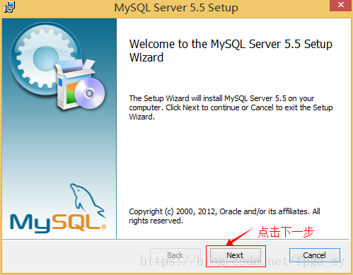
 3.选择安装类型，有“Typical（默认）”、“Complete（完全）”、“Custom（用户自定义）”三个选项，
选择“Custom”，按“next”键继续。
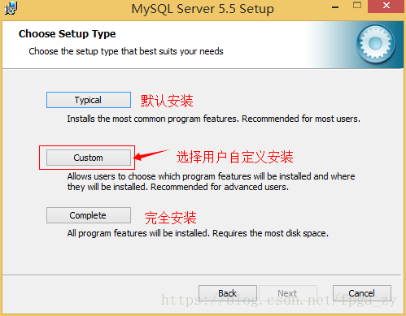
4.点选“Browse”，手动指定安装目录。
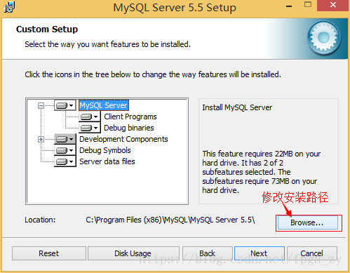
5.填上安装目录，建议不要放在与操作系统同一分区，这样可以防止系统备份还原的时候，数据被清空。按“OK”继续。
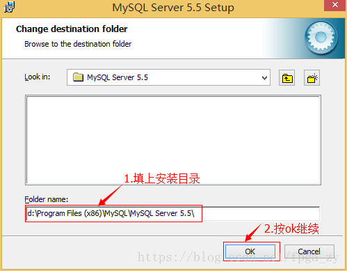
确认一下先前的设置，如果有误，按“Back”返回重做。按“Install”开始安装。
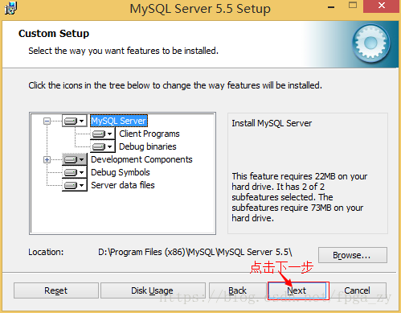
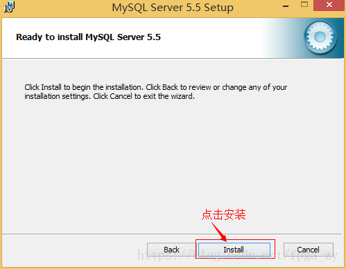
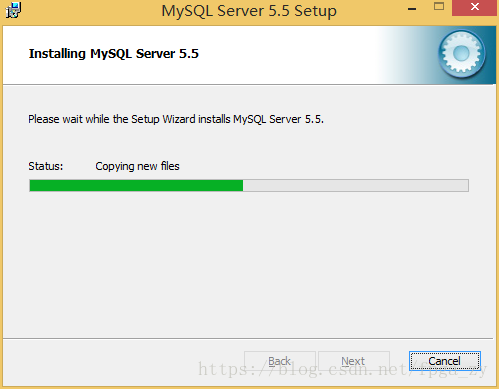
6.正在安装中，请稍候，直到出现下面的界面, 则完成MYSQL的安装
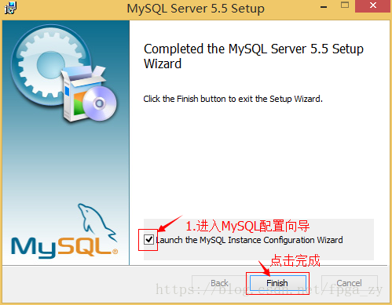
3.选择安装类型，有“Typical（默认）”、“Complete（完全）”、“Custom（用户自定义）”三个选项，
选择“Custom”，按“next”键继续。
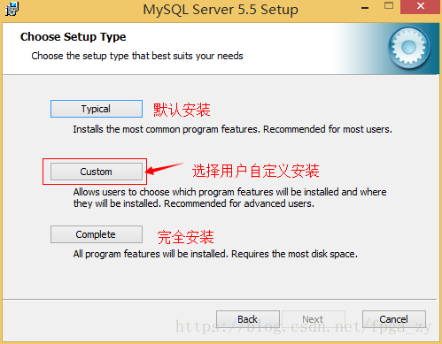
4.点选“Browse”，手动指定安装目录。
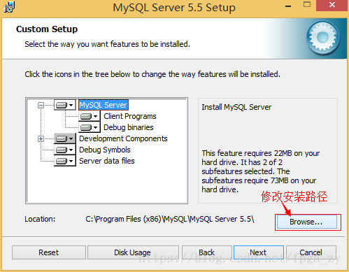
5.填上安装目录，建议不要放在与操作系统同一分区，这样可以防止系统备份还原的时候，数据被清空。按“OK”继续。
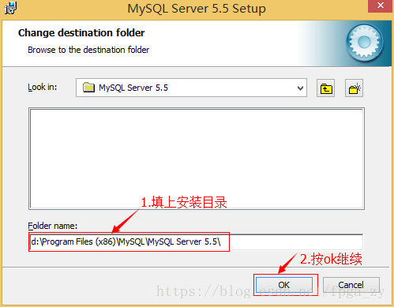
确认一下先前的设置，如果有误，按“Back”返回重做。按“Install”开始安装。
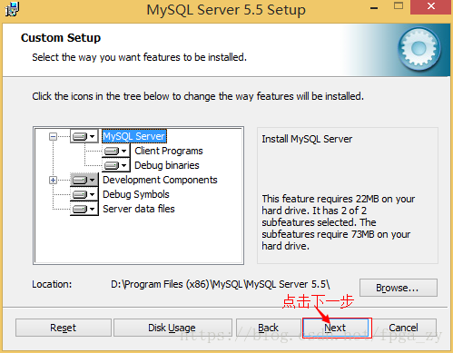
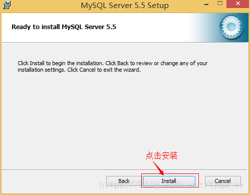
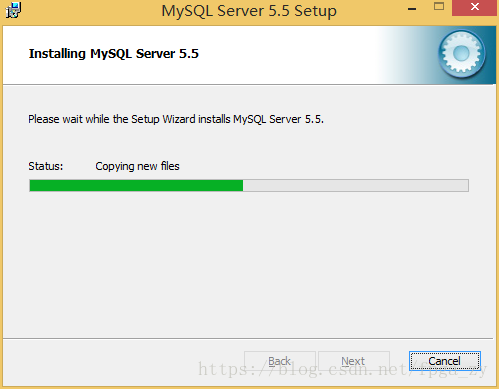
6.正在安装中，请稍候，直到出现下面的界面, 则完成MYSQL的安装
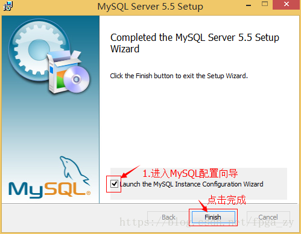
配置
1.安装完成了，出现如下界面将进入mysql配置向导。
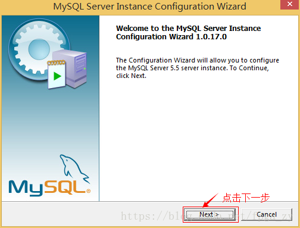
2.选择配置方式，“Detailed Configuration（手动精确配置）”、
“Standard Configuration（标准配置）”，我们选择“Detailed Configuration”，方便熟悉配置过程。
 3.选择服务器类型，“Developer Machine（开发测试类，mysql占用很少资源）”、“Server Machine（服务器类型，mysql占用较多资源）”、
“Dedicated MySQL Server Machine（专门的数据库服务器，mysql占用所有可用资源）”
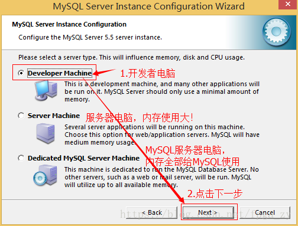
４、选择mysql数据库的大致用途，“Multifunctional Database（通用多功能型，好）”、
“Transactional Database Only（服务器类型，专注于事务处理，一般）”、“Non-Transactional Database Only
（非事务处理型，较简单，主要做一些监控、记数用，对MyISAM数据类型的支持仅限于non-transactional），按“Next”继续。
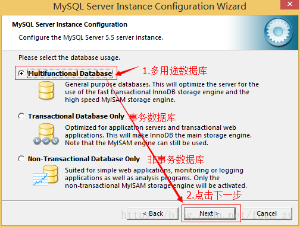
5.选择网站并发连接数，同时连接的数目，“Decision Support(DSS)/OLAP（20个左右）”、
“Online Transaction Processing(OLTP)（500个左右）”、“Manual Setting（手动设置，自己输一个数）”。
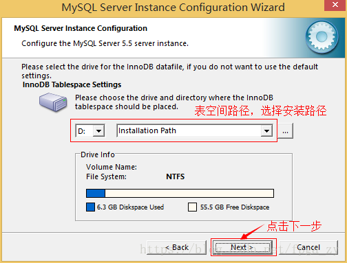
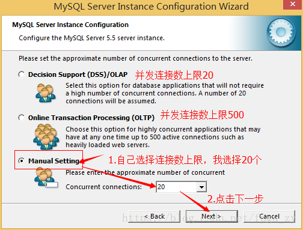
6.是否启用TCP/IP连接，设定端口，如果不启用，就只能在自己的机器上访问mysql数据库了，在这个页面上，
您还可以选择“启用标准模式”（Enable Strict Mode），这样MySQL就不会允许细小的语法错误。如果是新手，
建议您取消标准模式以减少麻烦。但熟悉MySQL以后，尽量使用标准模式，因为它可以降低有害数据进入数据库的可能性。按“Next”继续
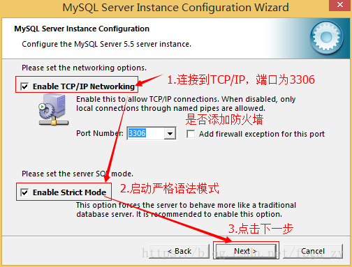
7.就是对mysql默认数据库语言编码进行设置（重要），一般选UTF-8，按 “Next”继续。
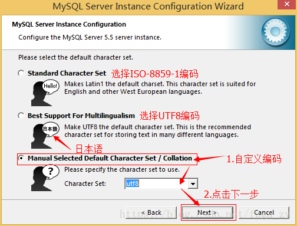
8.选择是否将mysql安装为windows服务，还可以指定Service Name（服务标识名称），
是否将mysql的bin目录加入到Windows PATH（加入后，就可以直接使用bin下的文件，而不用指出目录名，比如连接，“mysql.exe -uusername -ppassword;”就可以了，
不用指出mysql.exe的完整地址，很方便），我这里全部打上了勾，Service Name不变。按“Next”继续。
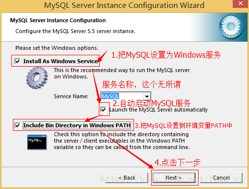
9.询问是否要修改默认root用户（超级管理）的密码。“Enable root access from remote machines（是否允许root用户在其它的机器上登陆，
如果要安全，就不要勾上，如果要方便，就勾上它）”。
最后“Create An Anonymous Account（新建一个匿名用户，匿名用户可以连接数据库，不能操作数据，包括查询）”，一般就不用勾了，设置完毕，按“Next”继续。
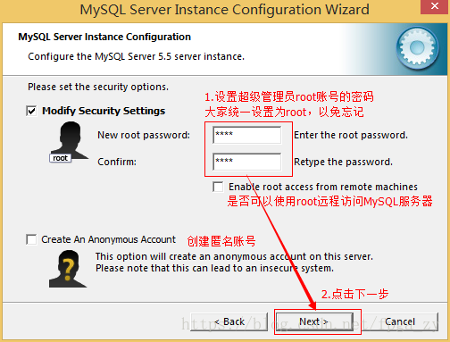
10.确认设置无误，按“Execute”使设置生效，即完成MYSQL的安装和配置。
3.选择服务器类型，“Developer Machine（开发测试类，mysql占用很少资源）”、“Server Machine（服务器类型，mysql占用较多资源）”、
“Dedicated MySQL Server Machine（专门的数据库服务器，mysql占用所有可用资源）”
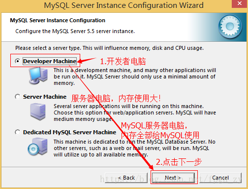
４、选择mysql数据库的大致用途，“Multifunctional Database（通用多功能型，好）”、
“Transactional Database Only（服务器类型，专注于事务处理，一般）”、“Non-Transactional Database Only
（非事务处理型，较简单，主要做一些监控、记数用，对MyISAM数据类型的支持仅限于non-transactional），按“Next”继续。
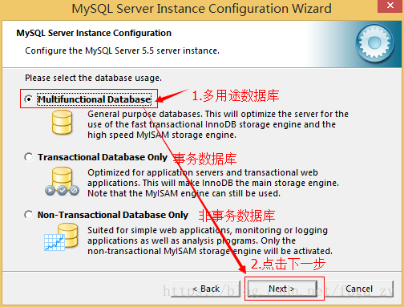
5.选择网站并发连接数，同时连接的数目，“Decision Support(DSS)/OLAP（20个左右）”、
“Online Transaction Processing(OLTP)（500个左右）”、“Manual Setting（手动设置，自己输一个数）”。
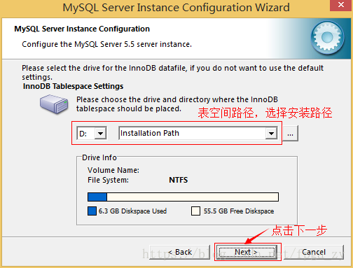
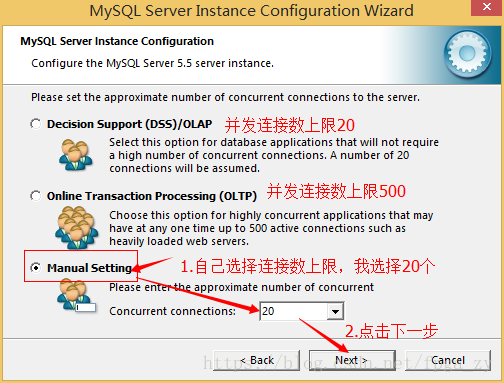
6.是否启用TCP/IP连接，设定端口，如果不启用，就只能在自己的机器上访问mysql数据库了，在这个页面上，
您还可以选择“启用标准模式”（Enable Strict Mode），这样MySQL就不会允许细小的语法错误。如果是新手，
建议您取消标准模式以减少麻烦。但熟悉MySQL以后，尽量使用标准模式，因为它可以降低有害数据进入数据库的可能性。按“Next”继续
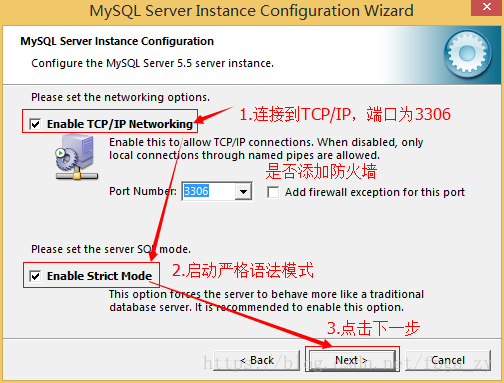
7.就是对mysql默认数据库语言编码进行设置（重要），一般选UTF-8，按 “Next”继续。
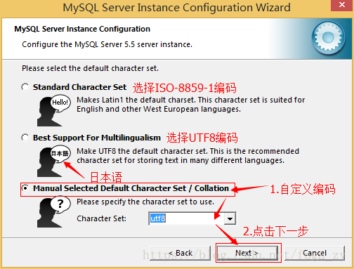
8.选择是否将mysql安装为windows服务，还可以指定Service Name（服务标识名称），
是否将mysql的bin目录加入到Windows PATH（加入后，就可以直接使用bin下的文件，而不用指出目录名，比如连接，“mysql.exe -uusername -ppassword;”就可以了，
不用指出mysql.exe的完整地址，很方便），我这里全部打上了勾，Service Name不变。按“Next”继续。
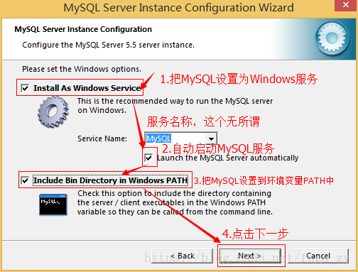
9.询问是否要修改默认root用户（超级管理）的密码。“Enable root access from remote machines（是否允许root用户在其它的机器上登陆，
如果要安全，就不要勾上，如果要方便，就勾上它）”。
最后“Create An Anonymous Account（新建一个匿名用户，匿名用户可以连接数据库，不能操作数据，包括查询）”，一般就不用勾了，设置完毕，按“Next”继续。
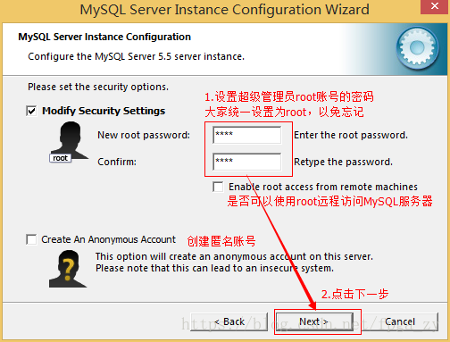
10.确认设置无误，按“Execute”使设置生效，即完成MYSQL的安装和配置。
 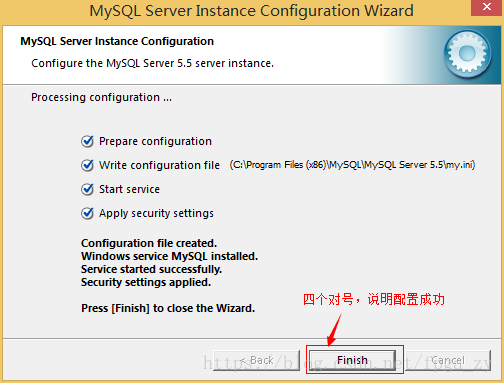
注意：设置完毕，按“Finish”后有一个比较常见的错误，就是不能“Start service”，一般出现在以前有安装mysql的服务器上，
解决的办法，先保证以前安装的mysql服务器彻底卸载掉了；不行的话，检查是否按上面一步所说，之前的密码是否有修改，照上面的操作；
如果依然不行，将mysql安装目录下的data文件夹备份，然后删除，在安装完成后，将安装生成的 data文件夹删除，
备份的data文件夹移回来，再重启mysql服务就可以了，这种情况下，可能需要将数据库检查一下，然后修复一次，防止数据出错。
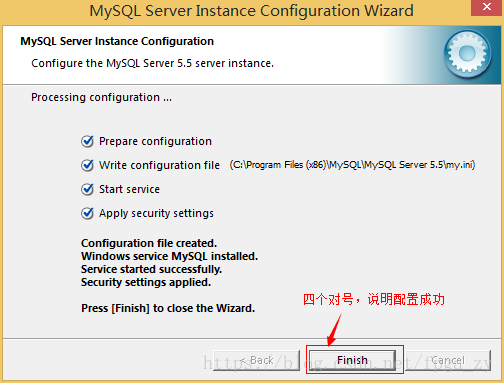
注意：设置完毕，按“Finish”后有一个比较常见的错误，就是不能“Start service”，一般出现在以前有安装mysql的服务器上，
解决的办法，先保证以前安装的mysql服务器彻底卸载掉了；不行的话，检查是否按上面一步所说，之前的密码是否有修改，照上面的操作；
如果依然不行，将mysql安装目录下的data文件夹备份，然后删除，在安装完成后，将安装生成的 data文件夹删除，
备份的data文件夹移回来，再重启mysql服务就可以了，这种情况下，可能需要将数据库检查一下，然后修复一次，防止数据出错。
解决方法：
1, 卸载MySQL
2, Windows Xp系统删除目录 C:\Documents and Settings\All Users\Application Data\
windows 7\8\10操作系统删除目录C:\ProgramData\MySQL
3、重新安装就可以了
关键点:如果在最后一步卡死了,等了5分钟左右还是在转圈,只有两个打钩了,这时候就需要启动任务管理器关闭这个进程, 然后在进入到mysql的安装目录,找到这个应用程序,然后右键管理员身份运行,重新配置一下就OK了.
卸载
1.打开控制面板-程序和功能-卸载
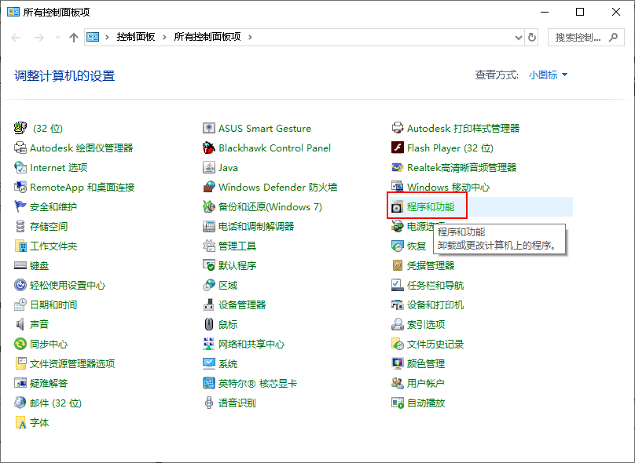
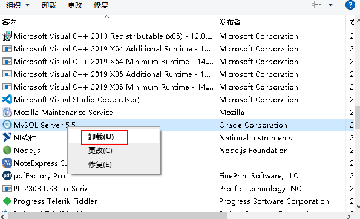
2.卸载过后，删除文件夹中的mysql，如删除C:\Program Files (x86)\MySQL该目录下剩余了所有文件，把mysql文件夹也删了
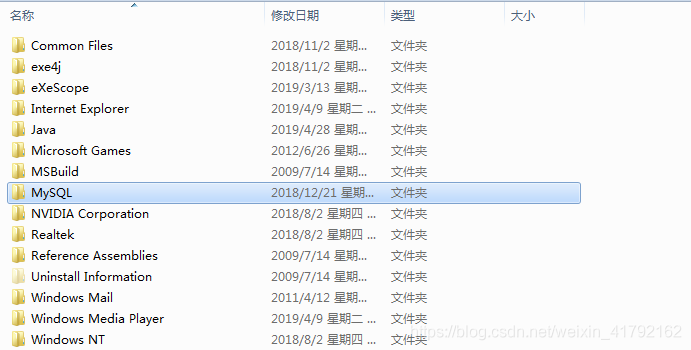
3.删除C盘下的C:\ProgramData\MySQL 所有文件，如果删除不了则用360粉碎掉即可，该programData文件是隐藏的默认，设置显示后即可见
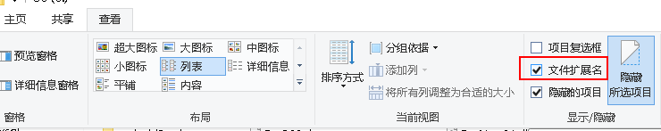
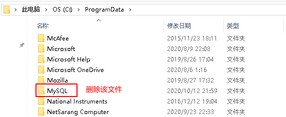
4.windows+R运行“regedit”文件，打开注册表
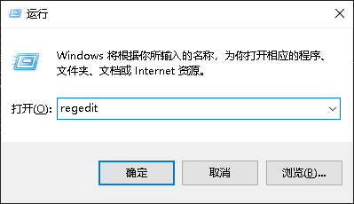
5.删除注册表：HKEY_LOCAL_MACHINE\SYSTEM\ControlSet001\Services\Eventlog\Application\MySQL文件夹
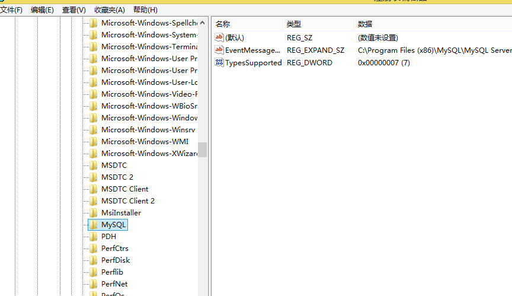
6.删除HKEY_LOCAL_MACHINE\SYSTEM\ControlSet002\Services\Eventlog\Application\MySQL文件夹，如果没有可以不用删除了。
最好重启下电脑，重新安装就可以了
参考资料：